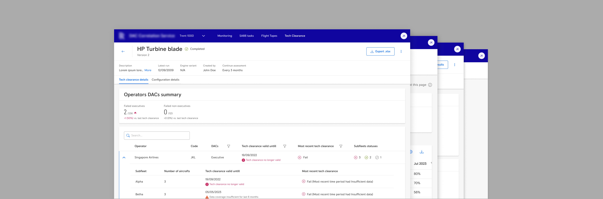
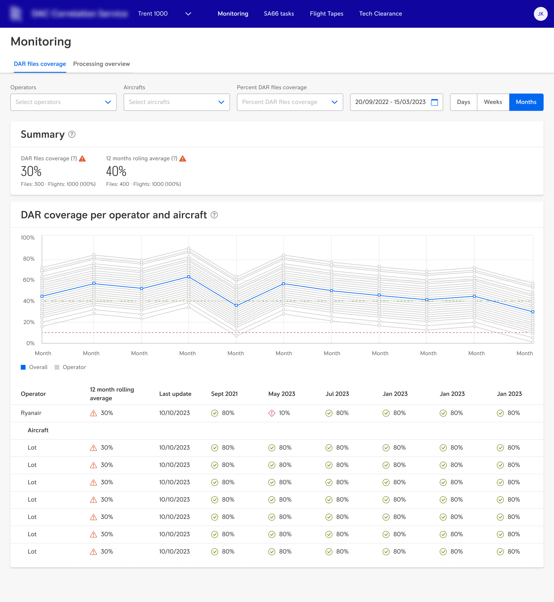

Case study · 02 · Aviation
Expert knowledge locked in private tools. No one else could run the process.
The hardest part wasn't the domain — I'm not an aircraft engineer and never will be. The hardest part was figuring out what engineers actually needed, as distinct from the workarounds they'd built because no proper tool existed. Design the workaround and you've digitalised a coping mechanism. Design the need and you've built something that survives when the person who invented the workaround leaves.
Role
Sole Product Designer & Researcher
Client
Aviation industry (via Accenture) · Desktop
Tools
Figma · FigJam · Miro · Jira
Methods
Expert interviews · Workflow mapping · Rapid wireframing · Usability testing · Handoff
The design challenge
My client's engineering team used a method called DAC Correlation to validate aircraft engine behaviour. The method was sound. The process around it wasn't — but that's the business problem, not the design problem.
The design problem was this: every engineer had built their own way of working. One had a Notepad-to-Python workflow only he understood. Another downloaded roughly a third of his hard drive's worth of raw data for every calculation, then deleted it when he was done. A third owned the entire tech clearance process — the documents that prove the DAC method is safe to use — and was the only person who could run it.
When I looked at those workflows, I was looking at two completely different things tangled together: what engineers actually needed to do, and the workarounds they'd built because no tool existed to help them do it. Half of those workarounds were going to be automated by the development team. The other half were the real interface.
My job was to figure out which was which.
My role
I was the sole Product Designer and Researcher on the project. I owned requirements gathering, user interviews, wireframing, feedback cycles with users and business stakeholders, usability testing, and developer handoff. I collaborated with a Product Owner and front-end and back-end development teams.
The portal was designed and released tab by tab. Each tab went through the full process before the next one began.
Process
Mapping the workflow to find the need behind it
I started with in-depth interviews with the engineers who owned each part of the process. My goal wasn't to understand the aeronautical calculations — that's years of domain expertise I was never going to acquire. My goal was narrower and more specific: for every step an engineer took, I needed to understand why they took it.
The reason that question is hard in specialist domains is that experts often can't answer it directly. They know what they do. They don't always know what would still be true if they had a proper tool. So I mapped the entire current workflow first — step by step, capturing what data was needed, what was being done manually, what was going wrong — and then I worked backwards from each step to ask: is this the task, or is this the workaround?
User journey for the tech clearance process — mapping the intended workflow before any screen was designed. Each stage defined what the user needed to accomplish and what information the interface had to surface. The journey came first; the design questions came from it.
The interviews surfaced the hard drive problem, the single-point-of-failure problem, and a consistent pattern underneath both: every engineer had solved the same problem differently, none of those solutions were visible to anyone else, and the whole system depended on institutional memory that could leave with any one of them.
Wireframes as a research instrument
Engineers don't have enough imagination to tell me "I need a dropdown here." But if I show them one, they'll tell me immediately whether it will work for them or not. That's not a limitation — it's how I use wireframes in domains like this. They're not presentations of decisions already made. They're the instrument I use to get reactions I couldn't get through questions alone.
This is also where I learned what not to build.
I proposed adding charts to make the data more visual. Users pushed back. The data had too many variables, too many interdependencies — a chart would have been noise, not insight. I removed them.
One engineer wanted the new interface to replicate his existing Notepad-to-Python workflow exactly. That workflow was a coping mechanism, not a need. Replicating it would have locked one person's workaround into a system everyone had to use. I didn't replicate it.


Early interface versions that didn't make the cut. The chart idea came from me — the pushback came from research. The Notepad-workflow replication came from one engineer — the decision not to build it came from understanding whose need it actually served. Both decisions came from the same process: show something, learn something real.
The solution
The portal shipped as four dashboards, released incrementally. Each one was designed around the need we'd extracted from the workflow — not the workflow itself.
Monitoring
The Monitoring dashboard gives engineers visibility into the data pipeline — whether files are arriving as expected and whether anything is being lost. Before this existed, problems only became visible after calculations had already gone wrong.
Flight Tapes

Flight Tapes replaced the hard-drive download process entirely. Engineers filter by date and operator and download only what they need. The workaround disappears; the need — access to the right data at the right time — is met directly.
SA66
Engineers use SA66 to work on the engine control file used to process raw data. They test the file against Flight Tapes and, when satisfied, the file becomes the new active version.


Left: creating a new SA66 task — selecting flight tapes, uploading the engine control file, choosing result types. Right: task details showing calculation results, succeeded and failed flight tapes, and downloadable result files.
Tech Clearance
Tech clearance reports now generate automatically on a schedule. The dashboard shows which operators passed or failed and why. A process that only one person understood is now accessible to the whole team — and will still be accessible after that person leaves.
Usability testing
Each tab was tested with end users after release — a minimum of five participants per round, none of whom had been involved in the design process. The Tech Clearance tab scored 83.1 on the System Usability Scale, placing it firmly in the "Excellent" range.
Testing surfaced a consistent issue across several tabs: interface labels weren't understood by users — even though all participants were aeronautical engineers and I had assumed shared vocabulary. The fix was straightforward: tooltips with plain-language explanations next to the labels that caused confusion.
It was also a reminder: shared expertise doesn't mean shared terminology. The words designers choose matter even when everyone in the room is an expert.
One of several post-testing recommendations documented in Figma. Labels like "Delay run by", "Flight limit", and "Flight usage limit (SDC)" were misunderstood. Recommendation: icons with clear descriptions explaining what each parameter means and how it affects results.
Outcome
The engineer who used to download a third of his hard drive for every calculation no longer does that.
The tech clearance process that only one person understood is now documented, automated, and accessible to the whole team.
Knowledge that lived in individual spreadsheets and Notepad files now lives in a shared, reliable system. The bus factor went from one to many.
The outcome that matters most to me isn't the product — it's that building it didn't require me to understand aircraft engines. It required me to separate what engineers needed from what they'd learned to live with. That distinction transfers. The domain doesn't have to.